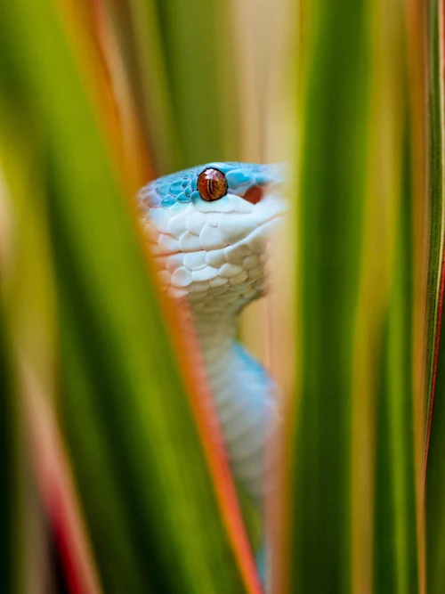

Snakes are Limbless reptiles that are found in almost all the world! They vary in size, habitat, and hostility. Some snakes are considered as Constrictors, where they squeeze the life out of their prey. Some are Venomous which they use to de-mobilize their prey or defend themselves from predators that attacks them.
What are Snakes?

Snakes are Limbless reptiles that are found in almost all the world! They vary in size, habitat, and hostility. Some snakes are considered as Constrictors, where they squeeze the life out of their prey. Some are Venomous which they use to de-mobilize their prey or defend themselves from predators that attacks them.